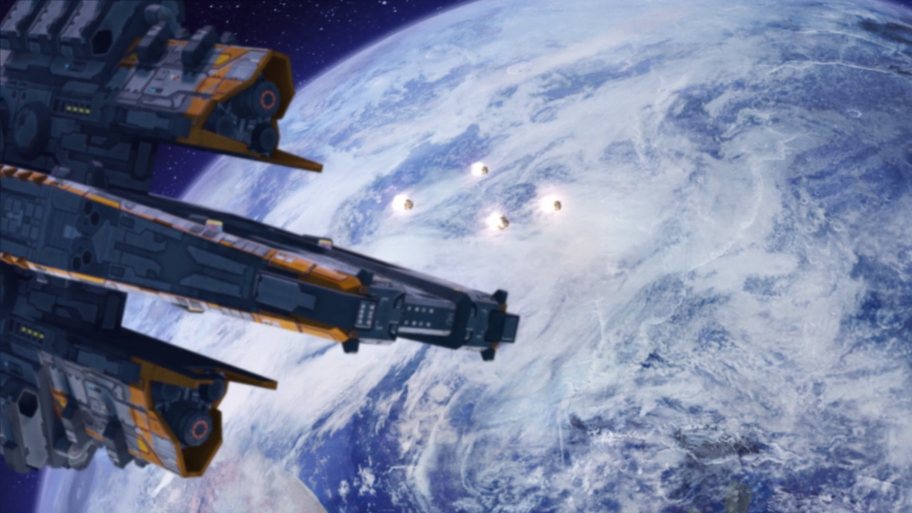

Apollyon
"Apollyon...what a cruel fate, that man's second Eden would be named so. That such a grim name comes from the highest bidder's list is, I find, a most fitting start to its prophecy of our destruction." -Jorg Neuman, Astrophysicist. 2191 AD.
The primary location of Gearstorm. Apollyon is an exo-planet located 12LY away from Earth. It resides in the habitable zone and boasts a human-compatible biosphere. Despite its miraculous status and location, Apollyon is a modest planet of large oceans and small land-masses. A distant cousin of our own, this pale blue dot daringly shines its brightest among the vast loneliness of space.
Contents
- Basic Planetary Info
- Discovery
- Biomes & Scenery
- Forest
- Desert
- Tundra
- Swamps
- Coastline
- Mountains
Basic Planetary Info
- Distance from Earth: approx 11.9 lightyears
- Earth Similarity Index: 0.98 (habitable)
- Equatorial Radius: 6,001 km
- Surface Gravity: 9.722 m/s2
- Surface Temps: -90 oC min, 14 oC average, 57 oC max (observed anyway).
- Surface Pressure: 101 kPa
- Surface Composition: 80% Ocean (saline), 20% everything else (ice, land, fresh water, etc.)
- Orbital Bodies: One moon, roughly similar to Earth's in size.
- Solar Info: Apollyon orbits the G-type stat Tau-Ceti.
- Apollyon's Moon.png] Apollyon's only, and unexplored, moon
Discovery
In 2156 AD, the Automated Kepler Systems Array--the humblest of exploration projects--made a historic discovery. It was a planet with an Earth-Similarity Index of 0.98, almost perfect.
Nanoprobes were dispatched at 18% the speed of light and their readings of the planet returned to Earth in 2191 AD. They were far more than we expected. By all readings and deductions, this new world had a fully functioning, human-compatible biosphere with breathable air. And it was only about twelve light-years away.
The automated system chose a name from its donor-determined list and mankind’s miracle second Earth was name Apollyon. But the miracle wouldn’t last.
The prize of Apollyon was too rich for the international peace to withstand. Nationalistic movements gained power from the over-crowded populations who were desperate to claim the open frontier of Apollyon for themselves. Demagogues gained power and diplomacy was replaced by posturing as powerful once-allies rattled their sabers at each other.
By 2196 AD, the world was in a state of multiple cold wars between the four powers. Proxy wars over smaller nations and ideologies caught fire across the globe. Fearing for their safety, the many nations of Earth began to spin a horrible web of hidden alliances and defensive treaties.
In 2197 AD, the Secretary-General of the UN, fearing that global war was nearing, held an immense diplomatic summit at the Tetragon moon base. Called The Reminder Speech ingloriously, it was a heavy-handed affair which desperately tried to focus the world’s leaders on what they could do together.
The summit worked initially. The G20 leaders present ratified an international treaty banning all independent colonization efforts. They promised that all would reach Apollyon, or none would. To that end, the International Colonization Authority was founded and charged with the task of starting a colony on Apollyon. All participating countries donated funds, manpower, and resources to it and the effort was placed under the UN’s oversight.
But peace was not to be had. Even with the biggest countries on Earth in outward agreement, many others would not listen. Political tensions continued to rise. By 2199 AD, numerous countries around the world started developing militarized space forces, in violation of all treaties counter to such. In the end, everyone knew the first to get to Apollyon would have a chance at winning it all.
2200 AD, was a big year for the UN’s peace push. Using the century anniversary as a coming together moment, the UN made a huge show of giving the ICA full ownership of the Tetragon Moon Base for use in constructing the first legal colony ship – The Vanguard. Assembly of the titanic vessel began that same year, albeit at a rushed pace for the show.
For a few months, people breathed easily. Then, in 2201 AD, a military satellite was accidentally shot down by another country’s space force during routine practice. The circumstances of who was at fault aren’t clear, but the international incident nearly brought the two countries to war.
Before hands could shake on a de-escalation meeting, the country who owned the satellite used the international focus on the peace talks to launch an illegal colony ship from Earth. It’s neighbor’s missile system shot the craft down, raining debris over a coastal city, lighting fires, and killing hundreds.
By the next year, 2203 AD, both countries were building up troops on their borders and skirmishes by deniable proxy troops were already heating up the theater of war. Peace talks failed in 2204 AD when a war was officially declared as a means of stopping the one county’s illegal colonization program.
This war triggered defensive treaties, which triggered hidden accords. The worrisome web of confusing and secretive agreements dragged the whole world down to war. Allies and enemies switched sides rapidly in the first year as the battle lines resolved.
Full-scale global war truly started in 2205 AD, when a nuclear exchange went down between super-powers. Then another super-power revealed that it had broken the ban on robotic armies. Everyone with illegal colonization programs tried to flee Earth and a series of brutal executions of their ships were televised from space as deterrents.
Around 2207 AD, nuclear weapons had driven the war underground or into bunkered mountain cities. Robot armies clashed across the radioactive wastelands of Earth’s surface while people fought savage battles in tunnel-warfare. World War 3 reached a gridlock. Looking to break the deadlock, someone created a biological weapon. Who it was is lost, or perhaps unknown, to history. The Phage they created, however, was the ultimate weapon.
The Phage spread by multiple vectors. It incubated for weeks without symptoms. Detecting it was expensive and difficult, especially for the war-taxed medical systems. When it did manifest, the Phage would erupt from its victims as it transformed them into violent, hyper-strong zombie-like monsters.
Within a year of its start, by 2209 AD, the Phage had put an end to World War 3. We were forced to stop fighting each other and instead battle the uncountable hordes of Phage. The fate of mankind was on the line.
In 2210 AD, Mars declared itself independent of Earth and rallied its merger space force to enact a blockage. This action ended what little resupply the Martian colonies had been receiving from Earth still and the Red Planet’s colonies descended into one of the most brutal famines in human history.
Around 2212 AD, the Phage infection caught fire on one of the moon’s several military bases. Fearing that the end of mankind was near, the ICA staff at the Tetragon declared their independence and cut off all contact with the outside world. They proceeded to pour all remaining resources into getting the Vanguard launch ready.
On Oct 13th, 2213 AD, the second to last moon base falls to the Phage and the ICA turns to defend their stronghold alone. The battle is hopeless though. The ICA, short on enough fuel to get the Vanguard to Apollyon, makes a monumental decision – the Vanguard wouldn’t carry people to Apollyon, but it would carry the means of making people once it gets there.
The once glorious Vanguard was stripped bare. Only the bioprinters, cloning technology, and cloning materials were left. Instead of sending mankind’s greatest minds into space, the skills and memories of ICA’s best personnel were recorded instead.
In the care of an AI named Julia, the ship was launched mere hours before the Phage overwhelmed the Tetragon’s defenses. Bearing with it the tiny flickering flame believed to be the last spark of humankind.
Biomes & Scenery

The ICA's Vanguard ship launching its drop pods down to the surface of Apollyon.
Apollyon is an Earth-like planet with a human-compatible biosphere. Please be warned: That does not mean human-friendly biosphere. It just means that people won't die instantly from breathing the air (in general) or standing on the ground under the default gravity (in general).
Almost all the data on the planet's geography and geology comes from remote probe scans and are limited to what advanced algorithms can deduce from orbital survey data exclusively. Specific on-the-ground intelligence is slim. There's no good mapping of volcanic activity and countless undiscovered natural phenomena lurk under clouds, forests, and jungles. It's a whole new world after all.
Here's what we know of Apollyon's biomes, in the broadest sense.
Forest
A mix of old-growth hardwoods and conifers the likes of which Earth hasn't had in thousands of years. The forests of Apollyon are primal and they're rich with useful animals and plants. Unfortunately useful plants and animals are usually also eaten by bigger animals. The lush forests also lay in the foothills of mountains so they provide no vantage points while the trees and brush provide cover for attackers. Will you risk the forests for their riches?
"So we called this one Raptrax 'the big f-ing lizard'. He and I have had a lot of goes at each other. Then something ate him. It wasn't me. Yeah, we moved base up to the Tundra shortly thereafter..." -Lt Rainer of the ICA Colony.
- Flora: Bladegrass? umm.. what else?
- Fauna: Apollyon Faun, Rhinolope, Raptrax, and the dreaded Tyrax (on occasion).
Desert
As hot and dry as any seasoned explorer would expect, the deserts of Apollyon are places where wind and sand have exposed the geological history of the planet. One such desert shows off Apollyon's crust via enormous weathered pillars of stone.
Game Tip: The pillars of rock in the desert have steep sides and are easy to burrow into for quick mining or base-building. The wide and flat terrain makes for easy vehicle passage.
The deserts are home to cactus-like plants and other spiky flora. Though the most famous inhabitants are the giant, highly territorial scorpions. Travelers beware.
- Flora: Cacti
- Fauna: Scorpax. (You've been warned.)
Tundra
Found in the steep alpine regions of the planet, the tundra is a woodsy place of tall conifers and snow. They are a cold, steep place to live and the mountainous nature of their location makes for difficult building (lack of flat land). However, the view can't be beaten and there's plentiful wood, plant, and animal resources to use to fuel the growth of a base.
"Why'd we settle here? It's because the tundra provides the high ground against any enemies, it's remote, and there's lots of meat running around just waiting for me to shove it into the grinder to make more people. Bullshit you say? Screw you -- the truth is that something huge lives down in the nice warm forest and we don't want to deal with it. So enjoy the view from the tundra and be glad you're alive." -Lt Rainer of the ICA Colony.
- Flora: Bladegrass? umm.. what else?
- Fauna: Apollyon Faun, Rhinolope, Raptrax.
Swamps
Aka, excessively moist low-lands. These stretches of insect-infested disease-breeding terrain are technically the kidneys of Apollyon's ecosystem. Most know them as the place they pass through to get to the coast.
"If we ever run low on food, my plan is to just drive through the swamp and hang a bug net out the window. That otta get a few pounds of something real quick." -Lt. Rainer
Coastline
The coastline is a lovely stretch of rocky sand and waves. It's beautiful and one can gaze out over the expanse of the ocean, but it's also a boundary. The oceans of Apollyon are vast and primal. Translation: Here be dragons. No one sails on the oceans of Apollyon because seafarers get eaten. It doesn't matter how big of a boat you build either, there's always something larger in the sea.
"I'd like to go fishing sometime, but the winch on the tank is only rated at 10,000lbs." -AgriScience Specialist Harvey of the ICA Colony.
Mountains
The high peaks of Apollyon can get very high, very snowy, and very sharp. Going over them in anything other than an aircraft can be tricky. Not a lot of anything goes up above the tree line. But hey, where else are you going to get such a good view? And no other heights are as grand as these when it comes to secluded summit-bases or aircraft launch facilities.